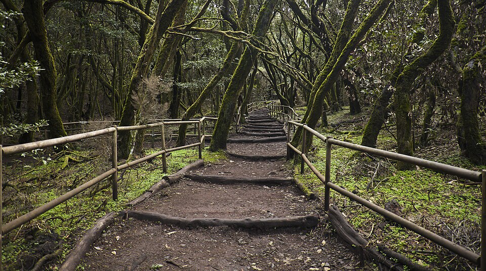

Béns naturals
Espais naturals destacats declarats Patrimoni de la Humanitat per la UNESCO a Espanya:
- Parc Nacional de Doñana — Andalusia (1994)
- Parc Nacional de Garajonay — Canàries (1986)
- Pirineus – Mont Perdut — Aragó/Navarra (1997)

Patrimoni de la Humanitat a Espanya
Espais naturals destacats declarats Patrimoni de la Humanitat per la UNESCO a Espanya:
